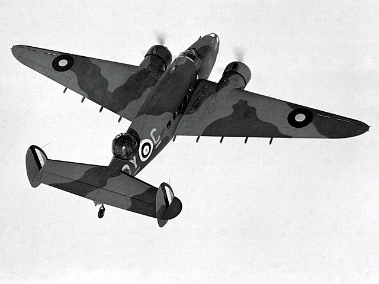
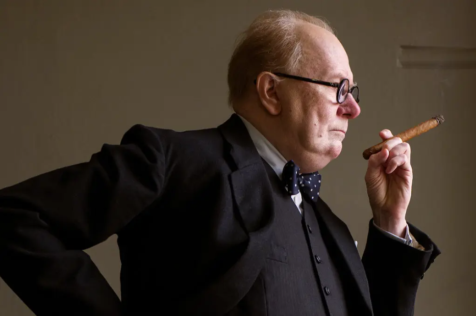
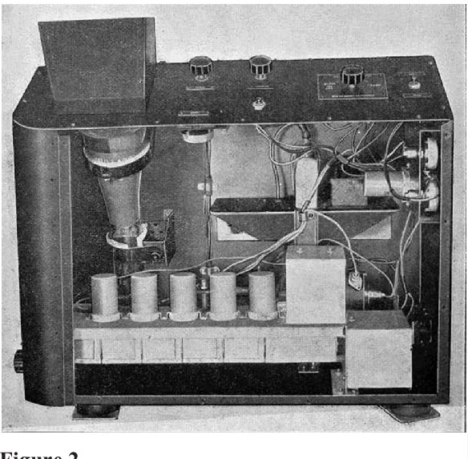
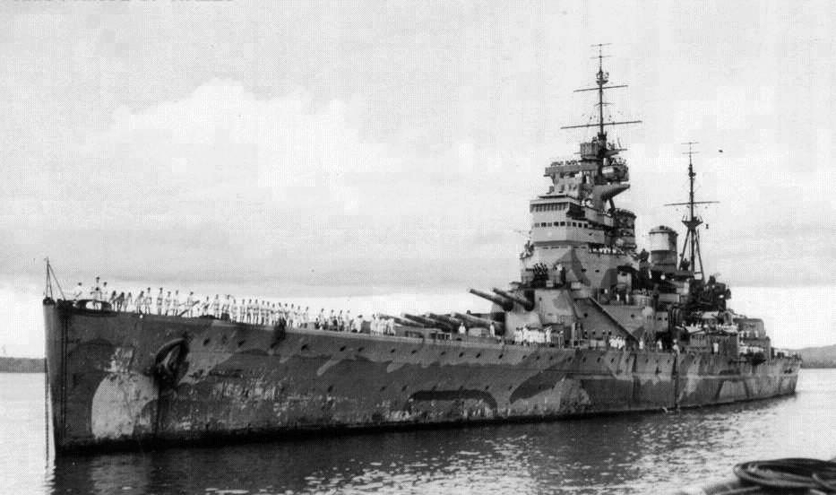
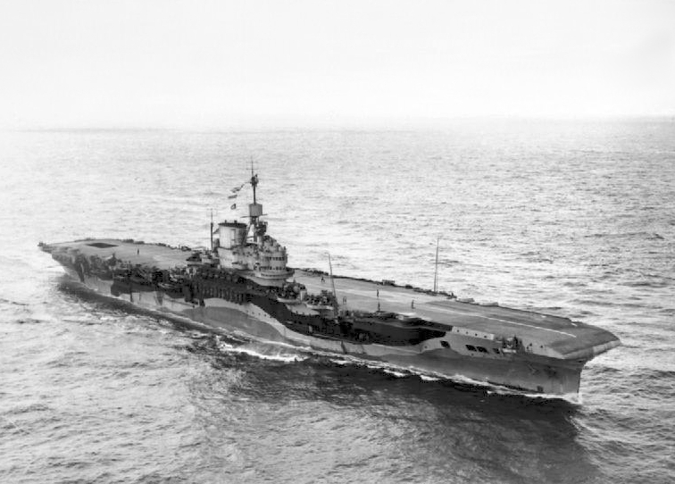
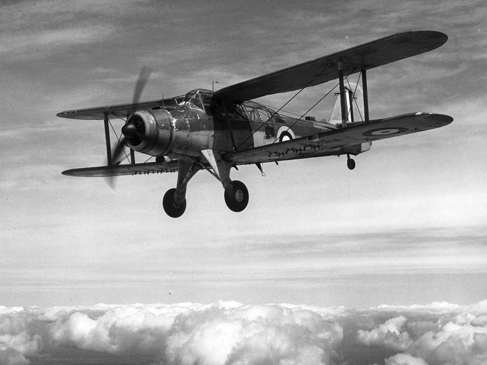
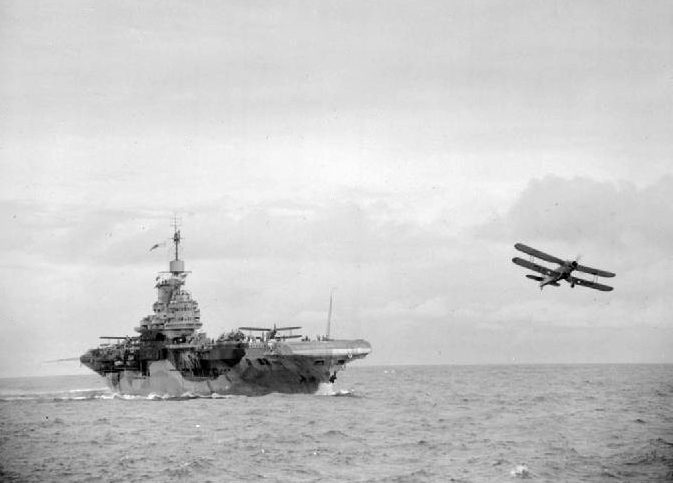
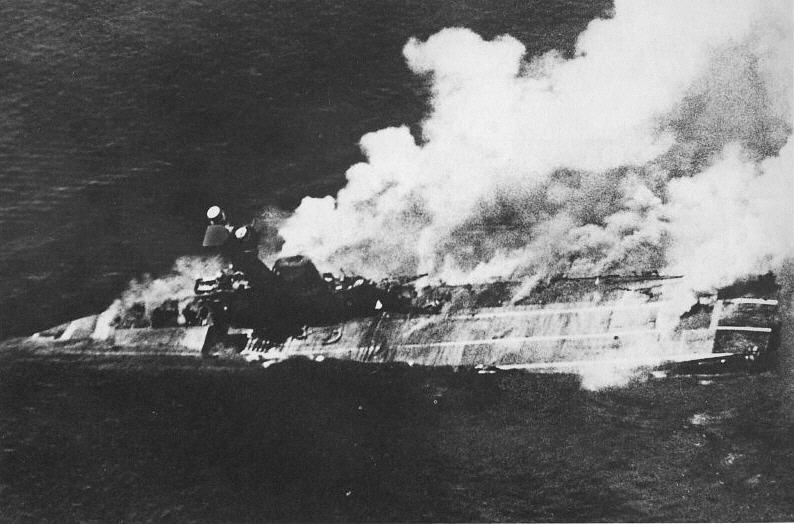

레이더 개발 이야기 (24) - 초도기의 위력
게시: 2023-03-09T06:30:38+09:00
<ASV 초도기의 용도> 1939년 후반부터 ASV(공대함) 레이더는 Fairey Swordfish와 Lockheed Hudson 등의 항공기에 순차적으로 설치 시작하여 1940년 초부터는 실제 전력화에 들어감. ASV 레이더의 원조라고 할 수 있는 AI(공대공) 레이더는 1940년 7월 경에나 최초로 전력화에 들어갔기 때문에, 결국 영국 공군의 ASV Mark I 레이더가 세계 최초의 항공기 탑재 레이더가 됨.

(경폭격기 및 초계기로 사용된 Lockheed Hudson. 원래 여객기로 개발된 것을 군용으로 전용한 것. 록히드사의 항공기 고객 중 최초의 주요 구매 고객이 바로 로열 에어포스였고 그 첫 주문이 이 헛슨 폭격기 200대였음.)

(게리 올드먼 주연의 처칠 영화 'The Darkest Hour'. 그 영화 중간에 처칠이 루스벨트에게 전화로 도와달라고 사정사정하니까 루스벨트가 '비행기를 캐나다 국경 근처까지는 보내줄테니 말로 끌어가면 어떻겠냐'라고 말하고 그 소리를 들은 처칠이 분노와 좌절로 '말이라고요?'라고 되묻는 장면이 나옴. 근데 그거 실제 상황이었음. 1939년 2월부터 헛슨 폭격기들이 영국 측에 배송되기 시작했는데, 특히 전쟁이 시작된 이후에는 미국의 중립 상태 때문에 배송에 문제가 생겼음. 결과적으로 헛슨은 먼저 캐나다 근처 미국 북쪽 국경선 근처로 비행한 뒤, 거기서 농업용 트랙터, 심지어 말로 끌어서 국경을 넘은 뒤 선박에 실어 영국으로 보냈다고.)
에반게리온 등에서 보면 어떤 물건이든 초도기가 짱쎈 물건이고 그 뒤에 만들어진 양산형은 그냥 싸구려로 만들어진 것처럼 묘사되지만, 물론 실제로는 초도기는 온갖 결함이 잔뜩 들어간 저성능의 물건. 당연히 가장 잘 설계된 것이 양산형으로 만들어짐. ASV Mk. I도 마찬가지. Mk. I은 1.5m 길이의 파장을 썼는데 이 정도의 장파로는 아무래도 레이더 성능이 흡족스럽지 못했음. 일단 테스트할 때는 해면 위 6m의 매우 낮은 고도에서 비행하면서도 주변의 선박들을 모조리 탐지하여 꽤 만족스럽게 보였고, 이 데모를 본 해군에서는 '저 물건을 우리 구축함에도 달게 해달라!'라고 요구하기도. 그러나 실제로 소드피쉬나 헛슨 등의 경폭격기가 독일 해군 사냥을 위해 사용한 결과는 매우 실망스러웠음. 이유는 역설적으로 로열 네이비가 너무 강력했기 때문. 바다에서 로열 네이비의 전함들과 순양함들이 판을 치다보니 해상에서 활동하는 독일 해군 선박은 오직 U-boat 뿐. 그런데 수면 위로 내놓은 부위가 상대적으로 낮고 작았던 잠수함은 ASV Mk. I으로는 잘 탐지가 되지 않았음. 로열 네이비의 잠수함 대상으로 테스트를 해보니 완전히 물 위로 부상한 잠수함이라고 해도 ASV Mk. I으로 탐지 가능한 거리는 최대 9km도 되지 않았고, 파도가 좀 거칠어지면 7km 정도로 줄어들었음.

(록히드 헛슨에 장착되었던 ASV Mk. I 레이더의 수신장치)
유보트 외에 독일 수송선 등도 바다를 오가기는 했는데, 이들은 보통 로열 네이비를 피해 해안선에 바싹 붙어 항행하는 경향이 있었음. 그러다보니 ASV 레이더의 전파가 수송선 뿐만 아니라 해안선 지형에도 반사되어 ASV Mk. I에는 해안선과 선박이 거의 구분이 되지 않았음. 그럼에도 불구하고 ASV Mk. I은 나름 쓸모가 있었는데, 엉뚱하게도 항법 가이드용이었음. 호송선단을 호위하거나 먼 바다를 정찰하던 항공기들은 먹구름이 잔뜩 끼거나 야간일 경우, 그 호송선단의 위치 파악 또는 착륙할 공군 기지까지 돌아가는 길을 찾는 것에 매우 애를 먹었는데 ASV 레이더 덕분에 매우 편하게 길을 찾을 수 있었던 것. 그 외에 또다른 활용도는 먹구름이 잔뜩 꼈을 경우 구름 아래의 적함을 찾는 것. 이 경우 특히 유리했던 것이 적함에서도 구름 때문에 항공기를 볼 수가 없었기 때문에 독일 군함의 대공포에 비교적 취약했던 영국 공군의 장거리 초계기가 불시에 독일 군함을 덮치는데 아주 좋았음. 이 상황은 나중에 독일 전함 비스마르크를 잡을 때도 재현됨.
<ASV Mk I 레이더 하나 믿고 뛰어든 싸움> 1941년 12월 진주만 습격은 어렵게 싸움을 이어가던 로열 네이비에게는 축복과 동시에 재앙. 중립을 지키던 미국을 대번에 전쟁에 끌어들이는 효과를 냈지만, 가뜩이나 부족한 전력으로 인해 비워두었던 인도-동남아 쪽에도 황급히 함대를 추가 파견해야 할 판국이 되었기 때문. 더군다나 이거 한 척이면 동남아 해상은 어떻게든 지킬 수 있다며 보냈던 (자칭) 불침전함 HMS Prince of Wales와 전투순양함 HMS Repulse가 싱가폴 인근에서 일본 해군 항공대에게 다구리를 당하고 어이없이 격침당하고 싱가폴까지 함락되자 난리가 남.

(1941년 12월 4일, 격침 당하기 며칠 전 싱가폴에서의 HMS Prince of Wales. 4만4천톤, 28노트. 장기간 항해로 페인트가 엉망으로 벗겨진 것이 눈에 보임. King George V급 전함으로서, 주포 구경을 14인치로 제한한 1935년 제2차 해군조약에 따라 만들어졌기 때문에 그 이전에 만들어진 Nelson급 전함이 가진 16인치 주포에 비해 더 작은 14인치 주포를 장비. 그러나 장갑 및 속도, 그리고 어뢰에 대한 대비는 훨씬 진보된 최신예 전함이었으므로 로열 네이비는 실제로 이 KGV 전함들을 불침 전함이라고 생각했음. 그리고 WW2 이후에도 다른 KGV 전함들은 소련과의 전쟁에 대비해서 1950년대까지 보존될 정도로 성능을 인정받았음.)
이제 일본 해군은 인도양까지 넘볼 태세. 실제로 일본 해군은 1942년 4월 초, Operation C, 즉 실론섬 타격 작전을 실시. 주축은 진주만을 습격했던 항모들을 포함한 총 5척의 항모와 공고급 전함 4척을 포함. 여기에 맞서 인도양을 지켜낼 영국 동방함대(Eastern Fleet)의 상태는 참담. WW1 이전에 진수된 R-class 전함 두 척이 주축이었던 동방함대는 부랴부랴 증강되었으나 제대로 된 전력은 2척의 항모 HMS Indomitable과 HMS Formidable, 그리고 WW1에서도 활약한 역전의 용사이자 진정한 불침전함 HMS Warspite 뿐. 나머지는 그냥 다 병풍. 원래 있었던 R-class 전함 2척에 나머지 R-class 2척이 추가로 배치되었으나 이 낡은 R-class 전함 4척은 그냥 목 뒤에 살이 접히는 진짜 병풍에 불과. 그냥 늘어서 있다가 유사시 칼받이 역할을 할 뿐 진짜 아무짝에도 쓸모가 없음.

(HMS Formidable. 2만3천톤, 30.5 노트. 항상 논란의 중심이 되었던 전형적인 장갑 항모로서, 현측 뿐만 아니라 비행갑판에도 3인치 두께의 장갑판을 장비. 1937년 건조가 시작될 무렵에는 아직 레이더에 대한 개념이 잡히지 않았기 때문에 어떻게 해도 결국 폭격기의 내습을 미리 막을 수는 없으며, 결국 든든한 장갑판으로 격납고를 보호해야 반격의 기회가 있다는 개념으로 만들어진 항모.)
이 상태에서 동방함대 사령관 James Somerville이 믿었던 것은 딱 하나. 그의 항모들에는 공대함 ASV Mk I radar를 장착한 복엽 뇌격기 Fairey Albacore가 있었음. 일찍부터 ASV의 가능성에 대해 높은 관심을 가지고 직접 항공기에 탑승하여 구름 밑의 아군함을 척척 찾아내는 ASV 레이더의 실제 훈련을 눈으로 목격한 그는 이것으로 질적으로나 양적으로나 압도적으로 우월했던 일본 함대에 대항할 생각이었음.

(Fairey Albacore. 복엽기이지만 1940년에 도입된 당시로서는 최신예기. 다만 같은 회사에서 나온 Swordfish에 비해 장애율이 높고 조종성이 나빠 인기는 더 낮았음. 그래도 지중해와 도버 해협 등지에서 맹활약했고 비스마르크의 자매함 Tirpitz 공습에도 참여. 그러나 역시 1943년부터는 단엽기인 Barracuda로 교체됨.)
그는 아예 콜롬보 항구나 트린코말레 항구에서 함대를 빼내어 공습을 피하고 낮에는 멀찍이 후퇴하여 일본 함대를 유인한 뒤, 밤에 기습적으로 다가가 ASV Mk I을 장착한 알바코어 뇌격기로 (밤에는 장님인) 일본 함대를 찾아내 야습을 할 작전이었던 것. 이 계획은 두 함대가 충분히 가까와졌던 4월 5일 밤 거의 성공할 뻔 했으나, 마지막 순간 함대 보존 본능이 살아난 소머빌 제독이 항로를 바꾸는 바람에 결국 실현되지 않음. 밤에 레이더를 장착한 알바코어가 300km 바깥까지 정찰을 했으나 일본 함대를 찾지 못했음.

(HMS Formidable에서 출격하는 Fairey Albacore)
결국 실론섬 전투는 영국 해군이 낡고 작은 시조새 항모 HMS Hermes와 2척의 순양함을 잃고 끝남. 영국 함대는 함대 보존에 만족. 그러나 ASV Mk I이 더 먼 거리까지 탐지가 가능했다면, 또 레이더를 더 빠른 항공기에 탑재할 수 있다면 해전의 향방을 바꿀 수 있다는 가능성을 열어주었음.

(실론섬 해전에서 침몰하는 HMS Hermes. 1만4천톤, 25노트. 1919년 진수된 낡은 항모였지만 1920~30년 당시 대부분의 항모들이 원래 전투순양함이던 것을 개조한 것이었던 것에 비해 허미즈는 처음부터 항모로 설계된, 진정한 의미에서의 세계 최초의 항모이자 항모의 시조새.)